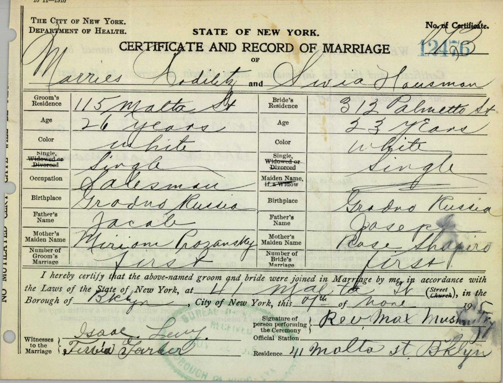

Family history notes · From Grodno, Volhynia and Podolia to Brooklyn and Philadelphia
The Rodilitz and Zaslow Families
The families of Theodore Rodilitz and Doris Zaslow, and how they came to America
Theodore Rodilitz was born in Brooklyn in 1919 and Doris Zaslow in Philadelphia in 1926. All four of their grandparents’ families were Jews from the western edge of the Russian Empire: the Rodilitzes and Hausmans from around Kobrin and Brest in Grodno province, with roots in Kovel in Volhynia, and the Zaslows and Saslows from Tulchin and Obodovka in Podolia. They crossed between 1892 and 1925. These notes set out what the records, gathered in October 2026, show about who they were, where they came from, and how each of them reached America.

New to the family?
This history follows four Jewish families from the western edge of the Russian Empire to America. Theodore Rodilitz, born in Brooklyn in 1919, was the grandson of a Hebrew teacher from Kovel whose family left the Kobrin district of Grodno province between 1907 and 1913. Doris Zaslow, born in Philadelphia in 1926, had grandparents from Podolia, in what is now Ukraine, who came in 1892–93 and 1904–06. They married in Brooklyn in 1948 and later made their home in California.
Zaslow and Saslow. Doris’s father was Benjamin Zaslow and her mother Catherine Saslow, daughter of another Benjamin, Benjamin Saslow. They are two different families.
Theodore’s side
Jacob Rodilitz, a Hebrew teacher born at Kovel, and Mary Prozansky of Divin brought eight children from the Kobrin district to East New York, Brooklyn, between 1907 and 1913. Their eldest son, Morris, married Sylvia Hausman, whose widowed mother came by way of Havana in 1925.
The Rodilitzes
Kovel, Kobrin and Divin; Brooklyn from 1907. Read more
The Hausmans
Grodno province, probably Brest; Brooklyn by 1915, Havana 1925. Read more
Theodore Rodilitz · Morris Rodilitz · Sylvia Hausman (Rodilitz) · Jacob Rodilitz · Mary (Miriam Reizel) Prozansky (Rodilitz) · Rose Shapiro (Hausman)
Doris’s side
Benjamin Saslow, a paperhanger, came from Podolia to South Philadelphia in 1892, and his wife and two small daughters followed in 1893. Benjamin Zaslow, born at Obodovka, came in 1904 and married their daughter Catherine; his parents followed to Brooklyn in 1906.
The Saslows
Podolia, probably Tulchin; Philadelphia from 1892. Read more
The Zaslows
Obodovka; Philadelphia and Brooklyn from 1904. Read more
Doris Zaslow · Benjamin Zaslow · Catherine Saslow (Zaslow) · Benjamin Saslow · Bessie Weiss (Saslow) · Jacob (Jack) Zaslow · Miriam Lesnoff (Zaslow)